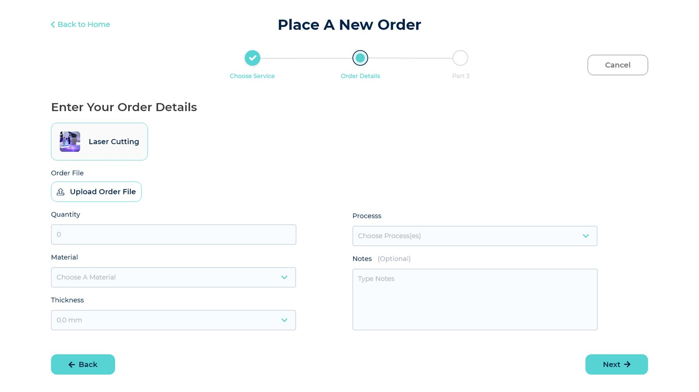
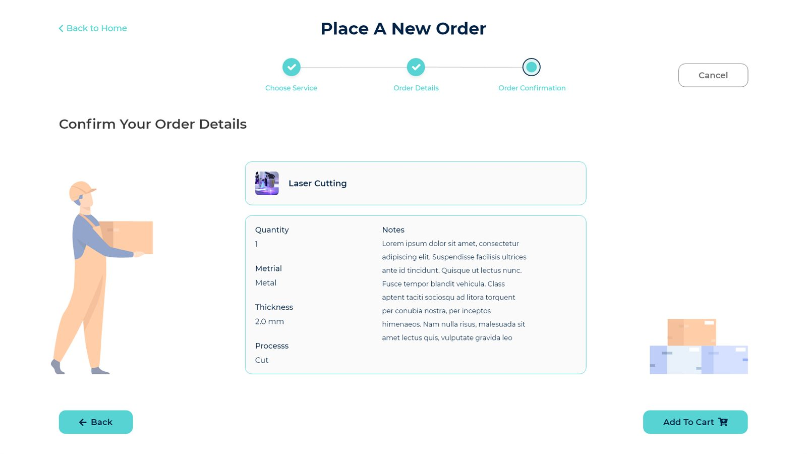

One list, every shop.
The category grid a client sees when placing an order — Laser Cutting, CNC Routing, 3D Printing, Molding, casting and more — is the marketplace's actual shape. Each tile maps to the machines and processes a provider has declared on their own profile, so a category isn't just a label, it's a filter.
Order around the file, not a form.
A client doesn't write a spec in prose — they upload the part file and answer four fields: quantity, material, thickness, process. That file becomes the single source of truth a provider quotes against, not a paragraph someone has to re‑read three times.
Quote, don't guess.
Every order rides a status ladder that providers, clients and admins all watch: New → Quoted or Rejected — always with a reason, never a silent no — → In progress → Shipped. Confirmation is the moment a client hands the file over and that ladder starts moving.
Two doors, one marketplace.
Clients and providers share the same shell — same login screen, same visual language — then branch into completely different consoles: one places orders and compares suppliers, the other manages machines, quotes and an incoming queue of files. An admin layer sits above both.


